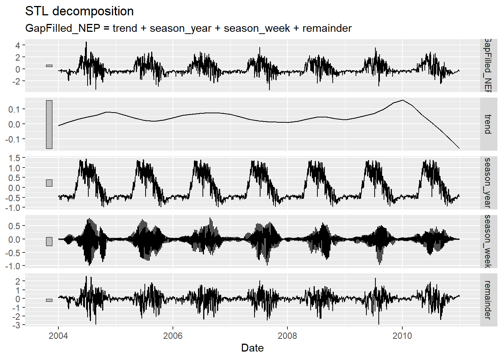
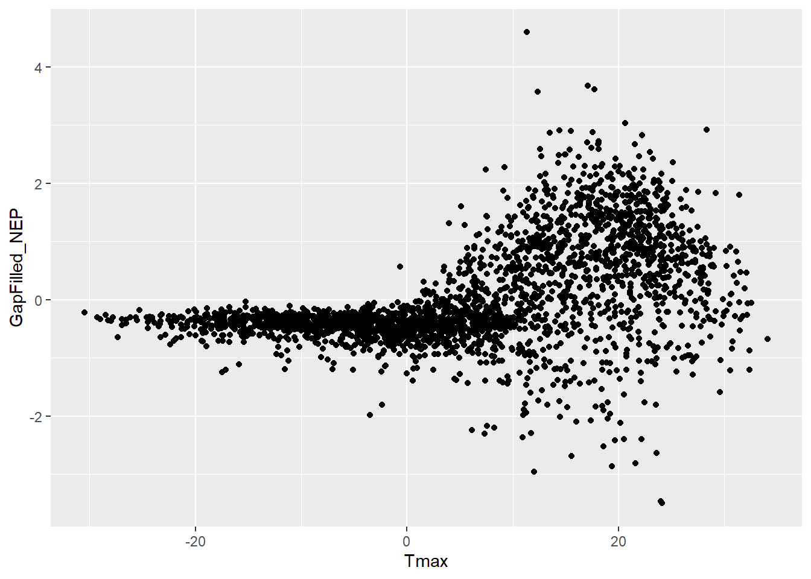
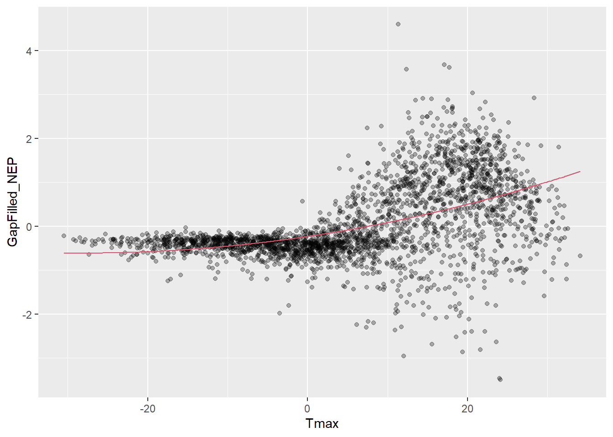
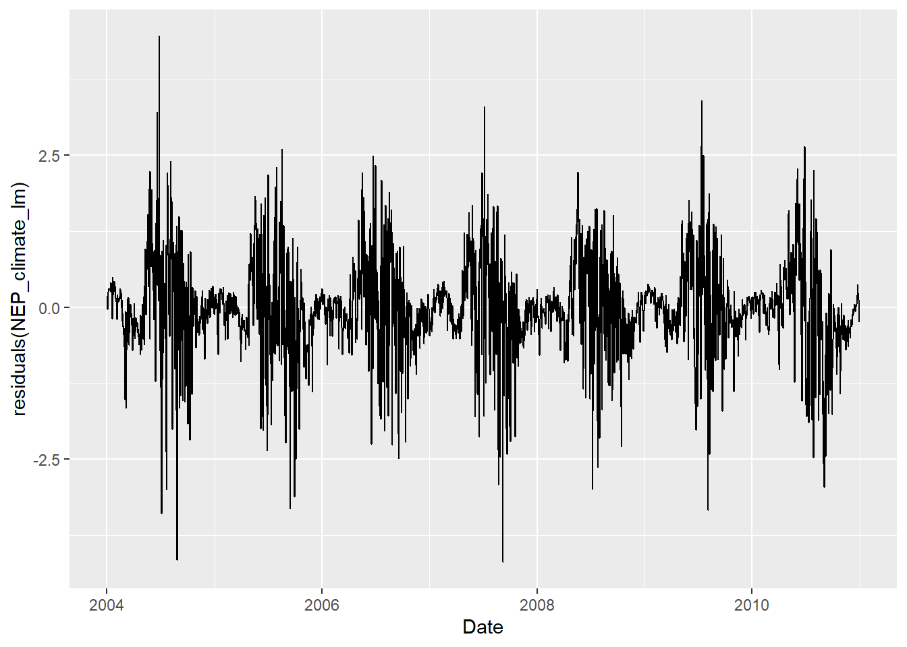

Graded lab: Time series (solutions)
This lab should be submitted to Moodle on April 21st.
Numbers in parentheses indicate the number of points for each question.
Total: 12 points.
Data
For this exercise we will use data from a flux tower located in a black spruce forest near Chibougamau.
Reference: Bergeron, Margolis, Black, Coursolle, Dunn, Barr, & Wofsy. (2007). Comparison of carbon dioxide fluxes over three boreal black spruce forests in Canada. Global Change Biology, 13(1), 89–107. https://doi.org/10.1111/j.1365-2486.2006.01281.x.
Flux towers measure net ecosystem exchange or the amount of gas that is exchanged between the atmosphere and the ecosystem using eddy covariance technique.
Weblink: https://www.neonscience.org/3d-interactive-flux-tower
Weblink: https://www.neonscience.org/data-collection/flux-tower-measurements
Weblink: https://www.neonscience.org/data-collection/meteorology
We will start loading the required packages and the data.
library(fpp3)
library(dplyr)
library(ggplot2)
library(cowplot)
EOBS_fluxnet <- read.csv("../donnees/EOBS_fluxnet2.csv")
head(EOBS_fluxnet)## Year Day GapFilled_NEP GapFilled_R GapFilled_GEP TimeSteps
## 1 2004 1 -0.3702583 0.3702583 0 48
## 2 2004 2 -0.3226569 0.3226569 0 48
## 3 2004 3 -0.3143513 0.3143513 0 48
## 4 2004 4 -0.3108769 0.3108769 0 48
## 5 2004 5 -0.3105173 0.3105173 0 48
## 6 2004 6 -0.3069446 0.3069446 0 48The columns are:
Year is the year of the observation
Day is the day of the year of the observation (1-365)
GapFilled_NEP is the daily net ecosystem productivity (umol C m-2 of stand s-1)
GapFilled_R is the daily ecosystem respiration (umol C m-2 of stand s-1)
GapFilled_GEP is the daily gross ecosystem productivity (umol C m-2 of stand s-1)
TimeSteps is an integer saying how many half hourly data composed the daily aggregates
1. ARIMA model for NEP
(1a) Create a temporal data frame (tsibble). As a first step, you must add a column containing the date using the information in Year and Day. Consult the following website to understand how to deal with date/time data in R: https://www.stat.berkeley.edu/~s133/dates.html (1 point)
EOBS_fluxnet = mutate(EOBS_fluxnet,
Date = as.Date(paste(EOBS_fluxnet$Year,EOBS_fluxnet$Day), format='%Y %j'))
EOBS_fluxnet = as_tsibble(EOBS_fluxnet, index = Date)
head(EOBS_fluxnet)## # A tsibble: 6 x 7 [1D]
## Year Day GapFilled_NEP GapFilled_R GapFilled_GEP TimeSteps Date
## <int> <int> <dbl> <dbl> <dbl> <int> <date>
## 1 2004 1 -0.370 0.370 0 48 2004-01-01
## 2 2004 2 -0.323 0.323 0 48 2004-01-02
## 3 2004 3 -0.314 0.314 0 48 2004-01-03
## 4 2004 4 -0.311 0.311 0 48 2004-01-04
## 5 2004 5 -0.311 0.311 0 48 2004-01-05
## 6 2004 6 -0.307 0.307 0 48 2004-01-06(1b) One of the problems working with daily data is to deal with leap years. In this case we load data with constant 365 days per year. This is a common solution to simplify the data processing, especially in modelling. In order to add one more day per each leap year we can use the functions fill_gaps (https://www.rdocumentation.org/packages/tsibble/versions/1.0.0/topics/fill_gaps) and tidyr::fill (https://www.rdocumentation.org/packages/tidyr/versions/1.1.3/topics/fill). We can specify that the added rows have Day equal to 366 and GapFilled_NEP, GapFilled_R, GapFilled_GEP, and Year equal to the value of the preceding row. (1 point)
EOBS_fluxnet = EOBS_fluxnet %>%
fill_gaps(Day = 366) %>%
tidyr::fill(GapFilled_NEP, .direction = "down") %>%
tidyr::fill(GapFilled_R, .direction = "down") %>%
tidyr::fill(GapFilled_GEP, .direction = "down") %>%
tidyr::fill(Year, .direction = "down")
EOBS_fluxnet[EOBS_fluxnet$Day==366,]## # A tsibble: 2 x 7 [1D]
## Year Day GapFilled_NEP GapFilled_R GapFilled_GEP TimeSteps Date
## <int> <dbl> <dbl> <dbl> <dbl> <int> <date>
## 1 2004 366 -0.227 0.227 0 NA 2004-12-31
## 2 2008 366 -0.644 0.644 0 NA 2008-12-31Here above we visualize the two added lines for the leap years.
(1c) Obtain a new temporal data frame (tsibble) containing mean monthly values of GapFilled_NEP. Plot the obtained time series and comment it. How does the time series vary over time? What do negative values mean? (1 point)
EOBS_fluxnet_monthly <- index_by(EOBS_fluxnet, month = yearmonth(Date)) %>%
summarize(GapFilled_NEP = mean(GapFilled_NEP))
head(EOBS_fluxnet_monthly)## # A tsibble: 6 x 2 [1M]
## month GapFilled_NEP
## <mth> <dbl>
## 1 2004 janv. -0.289
## 2 2004 févr. -0.410
## 3 2004 mars -0.616
## 4 2004 avr. -0.492
## 5 2004 mai 0.701
## 6 2004 juin 1.34autoplot(EOBS_fluxnet_monthly,vars(GapFilled_NEP))
In the plot we see the typical annual cycle of the productivity of a boreal forest ecosystem with contrasted winter dormancy and strong uptake over the growing season. The negative values during winter time mean that the ecosystem is a carbon source (respiration higher than photosynthesis).
(1d) Plot the 3 time-series of daily values (GapFilled_NEP, GapFilled_R, GapFilled_GEP), the annual seasonality of GapFilled_NEP (use the daily dataset as well as the monthly dataset providing two distinct plots), and the trend of GapFilled_NEP data for each month over time (use the monthly dataset). When does the growing season start and end at the study site? When does the peak of photosynthesis occur? Is there any evident trend in the mean monthly values? (1 point)
plot_grid(
autoplot(EOBS_fluxnet, GapFilled_NEP),
autoplot(EOBS_fluxnet, GapFilled_GEP),
autoplot(EOBS_fluxnet, GapFilled_R),
ncol = 1, align = "v")
gg_season(EOBS_fluxnet, y = GapFilled_NEP)
gg_season(EOBS_fluxnet_monthly, y = GapFilled_NEP)
The growing season starts in May and ends in September. The peak of photosynthesis is between May and July according to the year.
gg_subseries(EOBS_fluxnet_monthly, y = GapFilled_NEP)
There is no evident common trend in the monthly values. However, an upward trend in April and two negative trends in August and September are visible.
(1e) Extract the several components of the GapFilled_NEP daily time series (trend, seasonality, and residuals). What is the components’ relative importance? What does it mean? Finally, store the components into a new temporal data frame (tsibble). (1 point)
decomp <- model(EOBS_fluxnet, STL(GapFilled_NEP))
autoplot(components(decomp))
NEP_components = components(decomp)The residual component is the more important showing that the daily meteorology over the growing season strongly influences the productivity. The second more important component is the annual seasonality.
(1f) Analyze the autocorrelation and the partial autocorrelation of the GapFilled_NEP daily time series and of its residual component extracted in 1e. What do you deduce from these plots? (1 point)
plot_grid(autoplot(ACF(EOBS_fluxnet, GapFilled_NEP)), autoplot(PACF(EOBS_fluxnet, GapFilled_NEP)))
The autocorrelation structure of the NEP data is very long lasting because of the clear annual seasonality.
plot_grid(autoplot(ACF(NEP_components, remainder)), autoplot(PACF(NEP_components, remainder)))
The seasonal components obtained in 1e are not well adjusted to the data because the residuals show a weekly seasonality.
(1g) Adjust an ARIMA model to the GapFilled_NEP daily time series. Let the model choose the appropriate ARIMA model. What kind of ARIMA model is automatically selected? Do the the ARIMA residuals meet the model’s assumptions? (1 point)
NEP_arima <- model(EOBS_fluxnet, ARIMA(GapFilled_NEP))
report(NEP_arima)## Series: GapFilled_NEP
## Model: ARIMA(3,0,2)
##
## Coefficients:
## ar1 ar2 ar3 ma1 ma2
## 0.1990 0.9568 -0.1800 0.1138 -0.8565
## s.e. 0.0306 0.0267 0.0252 0.0220 0.0214
##
## sigma^2 estimated as 0.448: log likelihood=-2599.64
## AIC=5211.27 AICc=5211.3 BIC=5246.35An ARIMA model of the type (3,0,2) is selected. This means an autoregressive model of order 3 combined with a moving avearage model of order 2.
gg_tsresiduals(NEP_arima)
The residuals have only few slightly significant autocorrelations. However, they are not normally distributed because during wintertime they are normally very low.
(1h) Forecast and plot one additional year of GapFilled_NEP daily data based on the selected model in the previous step. (1 point)
prev_NEP <- forecast(NEP_arima, h = 365)
head(prev_NEP)## # A fable: 6 x 4 [1D]
## # Key: .model [1]
## .model Date GapFilled_NEP .mean
## <chr> <date> <dist> <dbl>
## 1 ARIMA(GapFilled_NEP) 2011-01-01 N(-0.32, 0.45) -0.318
## 2 ARIMA(GapFilled_NEP) 2011-01-02 N(-0.31, 0.49) -0.305
## 3 ARIMA(GapFilled_NEP) 2011-01-03 N(-0.29, 0.5) -0.286
## 4 ARIMA(GapFilled_NEP) 2011-01-04 N(-0.29, 0.51) -0.292
## 5 ARIMA(GapFilled_NEP) 2011-01-05 N(-0.28, 0.52) -0.276
## 6 ARIMA(GapFilled_NEP) 2011-01-06 N(-0.28, 0.53) -0.283autoplot(prev_NEP, EOBS_fluxnet, level = c(50, 95))
2. ARIMA model for NEP with external predictors
We will start loading meteorological data for the flux tower site.
My_meteo=read.delim("../donnees/EOBS_fluxnet_inmet2.txt",skip=1,header=F)
names(My_meteo)= c("Year","Day","Tmax","Tmin","Precip","CO2")
head(My_meteo)## Year Day Tmax Tmin Precip CO2
## 1 2004 1 -14.280000 -20.70000 0.306 384.4005
## 2 2004 2 -13.340000 -17.90000 0.203 384.3611
## 3 2004 3 -1.859991 -13.34000 0.401 384.3216
## 4 2004 4 -8.299994 -24.65999 0.000 384.2822
## 5 2004 5 -18.000010 -28.14001 0.157 384.2427
## 6 2004 6 -17.900000 -20.32000 0.109 384.2033The columns are:
Year is the year of the observation
Day is the day of the year of the observation (1-365)
Tmax is the daily maximum temperature (°C)
Tmin is the daily minimum temperature (°C)
Precip is the daily precipitation sum (cm)
CO2 is daily CO2 concentration (ppm)
Once you have loaded the meteorological data you must create a temporal data frame with these data (same procedure than 1a) and gap fill these data (same procedure than 1b).
My_meteo = mutate(My_meteo, Date = as.Date(paste(My_meteo$Year,My_meteo$Day), format='%Y %j'))
My_meteo = as_tsibble(My_meteo, index = Date)
My_meteo = My_meteo %>%
fill_gaps(Day = 366) %>%
tidyr::fill(Tmax, .direction = "down") %>%
tidyr::fill(Tmin, .direction = "down") %>%
tidyr::fill(Precip, .direction = "down") %>%
tidyr::fill(CO2, .direction = "down") %>%
tidyr::fill(Year, .direction = "down")(2a) Find the meteorological or environmental variable (Tmax, Tmin, Precip or CO2) that correlates the most with the GapFilled_NEP daily time series. (1 point)
cor(EOBS_fluxnet$GapFilled_NEP, My_meteo[, 3:6])## Tmax Tmin Precip CO2
## [1,] 0.4778448 0.3749279 -0.1627362 -0.150494The meteorological variable that correlates the most with the GapFilled_NEP daily time series is the daily maximum temperature.
(2b) Join the flux and meteorological tables (inner_join) and plot the relationship (scatterplot) between the variable found in 2a (x-axis) and GapFilled_NEP (y-axis). Comment on this relationship. (1 point)
EOBS_fluxnet <- inner_join(EOBS_fluxnet, My_meteo)
ggplot(EOBS_fluxnet, aes(x = Tmax, y = GapFilled_NEP)) +
geom_point() 
No carbon uptake is possible if Tmax is lower than about 3°C. After this threshold, a positive relationship is present with an important variability.
(2c) Apply a linear model without any ARIMA terms including a quadratic term for the variable found in 2a. Then, plot the model predictions on the plot of 2b. Finally, plot the residuals of this model as a function of time. Does the model represent the data correctly? Try to explain why the residuals seem to be mostly positive at the beginning of the growing season. (1 point)
NEP_climate_lm <- lm(GapFilled_NEP ~ Tmax + I(Tmax^2), EOBS_fluxnet)
summary(NEP_climate_lm)##
## Call:
## lm(formula = GapFilled_NEP ~ Tmax + I(Tmax^2), data = EOBS_fluxnet)
##
## Residuals:
## Min 1Q Median 3Q Max
## -4.1977 -0.3494 -0.0114 0.3002 4.4637
##
## Coefficients:
## Estimate Std. Error t value Pr(>|t|)
## (Intercept) -2.348e-01 2.143e-02 -10.955 < 2e-16 ***
## Tmax 2.701e-02 1.353e-03 19.958 < 2e-16 ***
## I(Tmax^2) 4.823e-04 7.942e-05 6.073 1.44e-09 ***
## ---
## Signif. codes: 0 '***' 0.001 '**' 0.01 '*' 0.05 '.' 0.1 ' ' 1
##
## Residual standard error: 0.7774 on 2554 degrees of freedom
## Multiple R-squared: 0.2393, Adjusted R-squared: 0.2387
## F-statistic: 401.8 on 2 and 2554 DF, p-value: < 2.2e-16ggplot(NEP_climate_lm, aes(x = Tmax, y = GapFilled_NEP)) +
geom_point(alpha = 0.3) +
geom_line(aes(y = fitted(NEP_climate_lm)),col=2)
The quadratic polynomial model does not fit well the data which are difficult to be represented by a simple common model for winter and summer time. Here the quadratic polynomial model underestimates the data for Tmax < -10°C and Tmax > 10°C while overestimates the data for Tmax between -5°C and 10°C.
ggplot(EOBS_fluxnet, aes(x = Date, y = residuals(NEP_climate_lm))) +
geom_line()
The residuals seem to be mostly positive at the beginning of the growing season because during this period the forest productivity strongly responds to good weather.
(2d) Add ARIMA terms to the model of 2c and compare the AIC of this model with the AIC of the model in 1g. Compare the ARIMA terms selected here and in 1g. (1 point)
NEP_climate_arima <- model(EOBS_fluxnet, ARIMA(GapFilled_NEP ~ Tmax + I(Tmax^2)))
report(NEP_climate_arima)## Series: GapFilled_NEP
## Model: LM w/ ARIMA(1,0,2) errors
##
## Coefficients:
## ar1 ma1 ma2 Tmax I(Tmax^2)
## 0.9837 -0.6791 -0.1538 0.0042 -3e-04
## s.e. 0.0046 0.0202 0.0199 0.0028 1e-04
##
## sigma^2 estimated as 0.4478: log likelihood=-2599.21
## AIC=5210.42 AICc=5210.45 BIC=5245.5The AIC of the model including Tmax is 5210.42 while the AIC of the model in 1g is 5211.27. An ARIMA model of the type (1,0,2) is selected here while a model of the type (3,0,2) is selected in 1g. The inclusion of Tmax slightly improves the model.